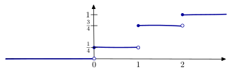
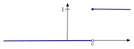
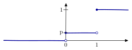
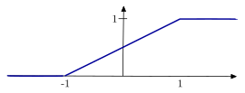
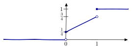
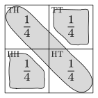
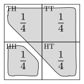

2 Random variables
In many situations, we are not directly interested in the outcome of a random experiment, but a consequence or measurement of the outcome. Such consequences may be thought of as a function of the outcome and are called random variables.
Example 2.1 Suppose a fair coin is tossed twice and we measure the number of heads. For any \(ω \in Ω\), let \(X(ω)\) denote the number of heads when \(ω\) occurs. Thus, \[ X(HH) = 2, \quad X(HT) = 1, \quad X(TH) = 1, \quad X(TT) = 0. \]
There are two ways to model this situation:
Model the underlying probability space (the coin tosses): \[ (Ω, \ALPHABET F, \PR), \quad \text{ where } Ω = \{ HH, HT, TH, TT \}, \ALPHABET F = 2^Ω, \text{ and $\PR$ is uniform on $Ω$}. \] This probability space is shown in Figure 2.1.
Figure 2.1: Probability space for two independent coin tosses Model the measurement (the number of heads): \[ (\ALPHABET X, \ALPHABET G, \PR_X), \quad \text{ where } \ALPHABET X = \{0,1,2\}, \ALPHABET G = 2^{\ALPHABET X}, \text{ and $\PR_X$ derived from $\PR$}. \] This probability space is shown in Figure 2.2.
Figure 2.2: Probability space for number of heads in two independent coin tosses
We don’t need to specify \(\PR_X\) directly, since it is computed from \(\PR\). Therefore, it is parsimonious to model \(X\) as a map: \[ X \colon (Ω, \ALPHABET F) \to (\ALPHABET X, \ALPHABET G) \] with \[ \PR_X(B) = \PR(X^{-1}(B)), \quad \forall B \in \ALPHABET G. \]
For the above probability calculations to make sense, we require that \(X^{-1}(B) \in \ALPHABET G\) whenever \(B \in \ALPHABET G\). This property is called measurability and a function with this property is called \(\ALPHABET F/\ALPHABET G\)-measurable.
Definition 2.1 A random variable \(X\) is a measurable function from a measurable space \((Ω, \ALPHABET F)\) to another measurable space \((\ALPHABET X, \ALPHABET G)\), which means that for any \(B \in \ALPHABET G\), \(X^{-1}(B) \in \ALPHABET F\).
If \(P\) is a probability measure on \((Ω, \ALPHABET F)\) (i.e., \((Ω, \ALPHABET F, \PR)\) is a probability space), then \[ \PR_X(B) = \PR(X^{-1}(B)), \quad \forall B \in \ALPHABET G. \] is a probability measure on \((\ALPHABET X, \ALPHABET G)\).
In this lecture, we focus on real-valued random variables, i.e., \((\ALPHABET X, \ALPHABET G) = (\reals, \mathscr{B}(\reals))\), where \(\mathscr{B}(\reals)\) denotes the Borel \(σ\)-algebra (see the last lecture).
In fact, introductory probability textbooks often define random variable as a measurable map from \((Ω, \ALPHABET F)\) to \((\reals, \mathscr{B}(\reals))\). The more general definition that we have used (a measurable mapping from a measurable space to any other measurable space) is often reserved for a follow up course on measure theory. I think that it is conceptually simpler to start with the measure-theoretic definition.
2.1 Real-valued random variables
The standard notation in probability theory is to use uppercase letters such as \(X\), \(Y\), \(Z\), etc. to denote random variables and the corresponding lowercase letters \(x\), \(y\), \(z\), etc. to denote the possible numerical values of these variables.
If \(X\) is a (real-valued) random variable on \((Ω, \ALPHABET F, \PR)\), then measurability implies that for every \(B \in \mathscr{B}(\reals)\), \(X^{-1}(B) \in \ALPHABET F\). Rather than explicitly defining the measure \(\PR_X\), we simply use the notation \[\PR(X \in B) \coloneqq \PR(\{ω \in Ω : X(ω) \in B \}).\]
If we take \(B\) to be the interval \((-∞, x]\), then the event \(X^{-1}(B) = \{ ω \in Ω : X(ω) \le x \}\). Such events are abbreviated as \(\{ω : X(ω) \le x \}\) or \(\{X \le x\}\). Thus, we have
- \(\PR(X \le x) = \PR(\{ω \in Ω : X(ω) \le x \})\).
- \(\PR(X = x) = \PR(\{ω \in Ω : X(ω) = x \})\).
- \(\PR(x < X \le y) = \PR(\{ω \in Ω : x < X(ω) \le y \})\).
The cumulative distribution function (CDF) of a (real-valued) random variable \(X\) is the function \(F_X \colon \reals \to [0,1]\) given by \[ F_X(x) \coloneqq \PR(X \le x) = \PR(\{ ω \in Ω : X(ω) \le x \}). \]
For instance, in Example 2.1, the CDF is given by \[ F_X(x) = \begin{cases} 0, & \hbox{if } x < 0, \\ \frac 14, & \hbox{if } 0 \le x < 1, \\ \tfrac 34, & \hbox{if } 1 \le x < 2,\\ 1, &\hbox{if } 2 \le x. \end{cases}\]
Figure 2.3: CDF of number of heads Some examples of CDF of random variables
Example 2.2 (Constant random variables) The simplest random variable takes a constant value on the whole domain \(Ω\), i.e., \[ X(ω) = c, \quad \forall ω \in Ω \] where \(c\) is a constant. The CDF \(F_X(x) = \PR(X \le x)\) is the step function \[ F_X(x) = \begin{cases} 0, & x < c \\ 1, & x \ge c. \end{cases} \]
Slightly more generally, we say that \(X\) is almost surely a constant if there exists a \(c \in \reals\) such that \(\PR(X=c) = 1\).
Figure 2.4: CDF of a constant random variable Example 2.3 (Indicator functions) Let \(A\) be an event. Define the indicator of event \(A\), denoted by \(\IND_{A} \colon Ω \to \reals\), as \[ \IND_{A}(ω) = \begin{cases} 1, & \hbox{if } ω \in A \\ 0, & \hbox{otherwise } \end{cases}.\]
Example 2.4 (Bernoulli random variable) A Bernoulli random variable takes two possible values: value \(0\) with probability \(1-p\) and value \(1\) with probability \(p\). It’s CDF is given by \[ F_X(x) = \begin{cases} 0, & x < 0 \\ 1 - p, & 0 \le x < 1 \\ 1, & x \ge 1. \end{cases} \] Observe that \(\IND_A\) is a Bernoulli random variable which takes values \(1\) and \(0\) with probabilities \(\PR(A)\) and \(1 - \PR(A)\).
Figure 2.5: CDF of a Bernoulli random variable Lemma 2.1 (Properties of CDFs)
\(\PR(X > x) = 1 - F_X(x)\).
\(\PR(x < X \le y) = F_X(y) - F_X(x)\).
\(\lim_{x \to -∞} F_X(x) = 0\) and \(\lim_{x \to +∞} F_X(x) = 1\).
CDFs are non-decreasing, i.e., if \(x < y\), then \(F_X(x) \le F_X(y)\).
CDFs are right continuous, i.e., \(\lim_{h \downarrow 0}F_X(x+h) = F_X(x)\).
\(\PR(X = x) = F_X(x) - F_X(x^{-})\), where \(F_X(x^{-})\) is defined as \(\lim_{h \downarrow 0} F_X(x - h)\)
NoteProofBy definition, \(\{X > x\}^c = Ω\setminus \{X \le x\}\). Thus, \[\PR(X > x) = 1 - \PR(X \le x) = 1 - F_X(x).\]
\[\PR(x < X \le y) = \PR(X \le y) - \PR(X \le x) = F_X(y) - F_X(x).\] [See assignment 1 for the first equality.]
Define the increasing sequence of events \(A_n = \{ X \le n\}\), \(n \in \naturalnumbers\). By continuity of probability, we have \[\begin{align*} &\quad & \PR\biggl( \bigcup_{n=1}^{∞} A_n \biggr) & = \lim_{n \to ∞} \PR(A_n) \\ \implies && \PR(\{X < ∞\}) &= \lim_{n \to ∞} \PR(X \le n) \\ \implies && \PR(Ω) &= \lim_{n \to ∞} F_X(n) \\ \implies && 1 &= \lim_{n \to ∞} F_X(n). \end{align*}\]
The reverse argument is similar where we consider the decreasing sequence of events \(B_n = \{ X_n \le -n \}\), \(n \in \naturalnumbers\). Then, by continuity of probability, we have \[\begin{align*} &\quad & \PR\biggl( \bigcap_{n=1}^{∞} B_n \biggr) & = \lim_{n \to ∞} \PR(B_n) \\ \implies && \PR(\{X < -∞\}) &= \lim_{n \to ∞} \PR(X \le -n) \\ \implies && \PR(\emptyset) &= \lim_{n \to ∞} F_X(-n) \\ \implies && 0 &= \lim_{n \to ∞} F_X(-n). \end{align*}\]
Recall that \[\begin{align*} F_X(x) &= \PR(X \le x) \\ F_X(y) &= \PR(X \le y) \end{align*}\] Observe that since \(x < y\), we have \(\{X \le x\} \subseteq \{X \le y\}\). Hence, by monotonicity of probability, we have \[\PR(X \le x) \le \PR(X \le y),\] which proves the result.
Consider the decreasing sequence of sets: \[ A_n = \{ X \le x + \tfrac 1n \}, \quad n \in \naturalnumbers. \] Then, by continuity of probability, we have \[\begin{align*} &\quad & \PR\biggl( \bigcap_{i=1}^{∞} A_n \biggr) & = \lim_{n \to ∞} \PR(A_n) \\ \implies && \PR(X \le x) &= \lim_{n \to ∞} \PR(X \le x + \tfrac 1n ) \\ \implies && F_X(x) &= \lim_{n \to ∞} F_X(x + \tfrac 1n). \end{align*}\]
Define the decreasing sequence of sets \[ A_n = \biggl\{ x - \frac 1n < X \le x \biggr\}, \quad n \in \naturalnumbers.\] Observe that by the previous property \[\PR(A_n) = F_X(x) - F_X(x - \tfrac 1n).\] Since \(A_n\) is a decreasing sequence of sets, we have \[\begin{align*} & \quad & \PR\biggl( \bigcap_{n=1}^∞ A_n \biggr) &= \lim_{n \to ∞} \PR(A_n) \\ \implies && \PR(X = x) &= F_X(x) - \lim_{n \to ∞} F_X(x - \tfrac 1n) \\ &&& = F_X(x) - F_X(x^{-}). \end{align*}\]
Example 2.5 For \(x < y\), express the following in terms of the CDF:
- \(\PR(x \le X \le y)\).
- \(\PR(x \le X < y)\).
2.2 Classification of random variables
There are three types of random variables
A random variable \(X\) is said to be discrete if it takes values in a finite or countable subset \(\ALPHABET X \coloneqq \{x_1, x_2, \dots\}\) of \(\reals\). A discrete random variable has a probability mass function (PMF) \(p \colon \reals \to [0,1]\) which satisfies the following properties:
- \(p(x) = \PR(X = x) = F_X(x) - F_X(x^{-})\).
- \(F_X(x) = \sum_{x_n : x_n \le x} p(x_n).\)
Thus, for a discrete random variable, the CDF is a piecewise constant function
Figure 2.3, Figure 2.4, Figure 2.5 are all examples of discrete random variables.
A random variable \(X\) is called continuous if there exists an integrable function \(f \colon \reals \to [0, ∞)\) called the probability density function such that the CDF can be written as \[ F_X(x) = \int_{-∞}^x f_X(x) dx. \]
Thus, for a continuous random variable, the CDF is a continuous function
Figure 2.6: CDF of a continuous random variable A random variable is called mixed if it is neither discrete nor continuous. For a mixed random variable, the CDF has jumps at a finite or countable infinite number of points and it is continuous over one or many intervals.
Figure 2.7: CDF of a mixed random variable As an example, consider the following random experiment. A fair coin is tossed: if the outcome is heads, then \(X \sim \text{Bernoulli}(0.5)\); if the outcome is tails; then \(X \sim \text{Uniform}(0,1)\). Thus (from the law of total probability), the CDF of \(X\) is given by \[ F_X(x) = \begin{cases} 0, & \hbox{if } x < 0 \\ \frac 14 & \hbox{if } x = 0 \\ \frac 14 + \frac x2 & \hbox{if } 0 < x < 1 \\ 1 & \hbox{if } x \ge 1. \end{cases} \] and shown in Figure 2.7.
Lemma 2.2 (Properties of discrete and continuous random variables)
Properties of discrete random variables
For a discrete random variable \(X\), define the probability mass function (PMF) \(P_X \colon \reals \to \reals\) as \[ P_X(x) = F_X(x) - F_X(x^{-}).\] By construction, \(P_X(x) \ge 0\) and \(\sum_{x \in \ALPHABET X} P_X(x) = 1\).
Then, for any event \(A \in \mathscr{B}(\reals)\), \[\PR(X \in A) = \sum_{x \in \ALPHABET X \cap A} P_X(x).\]
Properties of continuous random variables
For a continuous random variable \(X\), define the probability density function (PDF) \(f_X \colon \reals \to \reals\) as \[ f_X(x) = \frac{d}{dx} F_X(x). \] By construction, \(f_X(x) \ge 0\) and \(\int_{-∞}^{∞} f_X(x)\, dx = 1\).
Then, for any event \(A \in \mathscr{B}(\reals)\), \[\PR(X \in A) = \int_{x \in A} f_X(x)\,dx.\]
2.2.1 Examples of discrete random variables
We now consider some other examples of discrete random variables, which are typically described by specifying their PMF.
Example 2.6 (Binomial random variable) A Binomial random variable is the sum of independent and identically distributed Bernoulli random variables (we will prove this fact later). For example, if a biased coin (with \(\PR(H) = p\)) is tossed \(n\) times, then the number of heads is a binomial random variable with parameters \(n\) and \(p\), which is denoted by \(\text{Binomial}(n,p)\). For such a random variable, \[ P_X(k) = \binom n k p^k (1-p)^{n-k}, \quad 0 \le k \le n. \]
Example 2.7 (Geometric random variable) A geometric random variable is the number of trials in i.i.d. Bernoulli random variables. For example, if a biased coin (with \(\PR(H) = p\)) is tossed repeatedly, the number of tosses needed for the first head is a geometric random variable with parameter \(p \in (0,1)\), which is denoted by \(\text{Geo}(p)\). For such a random variable, \[ P_X(k) = (1-p)^{k-1} p, \quad k \in \integers_{> 0}. \]
A geometric random variables have the property of being memoryless: the distribution of waiting time does not depend on how much time has already elapsed.
Example 2.8 (Poisson random variable) Poisson random variables model many different phenomenon ranging from photoelectric effect in photonics to inter-packet arrival times in computer networks. A random variable is said to Poisson random variable with parameter \(λ > 0\), which is denoted by \(\text{Poisson}(λ)\), if \[ P_X(k) = \frac{λ^k}{k!} e^{-λ}, \quad k \in \integers_{\ge 0}. \]
Poisson random variables model rare events. It describes the limit of a Binomial random variable with success probability \(p = λ/n\) as the number \(n\) of trials increases. Poisson random variables have the stability property that sum of Poisson random variables is Poisson
Example 2.9 (Uniform random variable) A random variable is said to have a (discrete) uniform distribution over a discrete set \(\ALPHABET S\) if \[P_X(k) = \frac 1{\ABS{\ALPHABET S}}, \quad k \in \ALPHABET S.\]
2.2.2 Some examples of continuous random variables
Example 2.10 (Uniform random variable) A random variable is said to have a (continuous) uniform distribution over an interval \([a, b]\), where \(a < b\) if \[f_X(x) = \frac 1{b - a}, \quad x \in [a,b].\]
Example 2.11 (Exponential random variable) A random variable is said to have an exponential distribution with parameter \(λ > 0\), which is denoted by \(\text{exp}(λ)\) if \[f_X(x) = λ e^{-λ x}, \quad x \ge 0.\]
Exponential random variables arise in queueing theory, network traffic, and photonics. They have the property of being memoryless: the distribution of the waiting time does not depend on how much time has already elapsed.
Example 2.12 (Gaussian random variable) A random variable is said to have a Gaussian distribution with mean \(μ\) and standard deviation \(σ > 0\), which is denoted by \(\mathcal N(μ, σ^2)\) if \[f_X(x) = \frac 1{\sqrt{2 π}\, σ} \exp\left( -\frac {(x-μ)^2}{2 σ^2} \right), \quad x \in \reals.\]
A Gaussian distribution is also called a Normal distribution. When \(μ = 0\) and \(σ^2 = 1\), the distribution is called standard Normal.
The Gaussian distribution is perhaps the most important continuous distribution because of its role in the Central Limit Theorem. Gaussian random variables have the stability property that sum of Gaussian random variables is Gaussian.
2.3 Functions of random variables
We often encounter situations where we are interested in functions of random variables. Functions of random variables are random variables.
In particular, suppose \[ X \colon (\ALPHABET Ω, \ALPHABET F) \to (\reals, \mathscr{B}(\reals)) \] is a random variable and \(g \colon \reals \to \reals\) is a measurable function.
Since \(g\) is measurable, for any (Borel) subset \(B\) of \(\reals\), we have that \(C = g^{-1}(B) \in \mathscr B(\reals)\). Therefore, \(X^{-1}(C) \in \ALPHABET F\). Thus, we can think of \(Y\) as a random variable.
Since \(Y\) is a random variable, it is possible to compute its CDF and PMF/PDF as appropriate. We discuss the details separately for discrete and continuous random variables.
2.3.1 Functions of discrete random variables
In the discrete time, it is trivial to find the PMF of \(Y\) in terms of PMF of \(X\). For example, consider the random variable \(X\) defined in Example 2.1. Let \(g \colon \{0, 1, 2\} \to \{0, 1\}\) be given by \[ g(0) = 0, \quad g(1) = 0, \quad g(2) = 1. \] Then, \[ P_Y(0) = P_X(0) + P_X(1) \quad\text{and}\quad P_Y(1) = P_X(2). \]
However, it will be useful to visualize this slightly differently. We start with revisiting measurability for discrete random variables. The main point is that
A discrete random variable creates a partition on the sample space (we expand on this point below).
The power-set of \(\{A_1, A_2, \dots\}\) is called the \(σ\)-algebra generated by \(X\) and denoted by \(σ(X)\). This \(σ\)-algebra captures the crux of measurability.
We now discuss the partition generated by a discrete random variable. Let \(X\) be a random variable and \(\ALPHABET X = \{x_1, x_2, \dots, x_n\}\) be the range of \(X\). Define \[A_i = \{ω \in Ω : X(ω) = x_i \} = X^{-1}(x_i).\] Then, \(X\) can be written as \[ X(ω) = \sum_{i=1}^{n} x_i \IND_{A_i}(ω). \]
Note that \(\{A_1, \dots, A_n \}\) are disjoint events and their union is the entire sample space \(Ω\) (because one of \(x_i\)’s must occur). Thus, \(\{A_1, \dots, A_n \}\) is a partition of \(Ω\).
As an illustration, let’s reconsider Example 2.1. In this case, the range of \(X\) is \(\ALPHABET X = \{0, 1, 2\}\). The partition corresponding to \(X\) is shown in Figure 2.8.

The partition corresponding to \(Y = g(X)\) is shown in Figure 2.9. Observe that this partition is a coarsening of the partition corresponding to \(X\).

The PMFs of \(X\) and \(Y\) can be obtained by summing up the masses in each element of their respective partitions.
2.3.2 Functions of continuous random variables
For continuous random variables, computing the PDF of a function of a random variable is more involved. We first illustrate the main idea via some examples.
Example 2.13 Suppose \(X \sim \text{Uniform}(0,2)\). Consider a function \(g\) given by \[ g(x) = \begin{cases} x & x \in (0,1] \\ 2 - x & x \in (1,2] \\ 0 & \hbox{otherwise} \end{cases} \] Define \(Y = g(X)\). Find \(F_Y(y)\) and \(f_Y(y)\).
NoteSolution
From the definition of \(g\), we know that the range of \(g\) is \([0,1]\). Thus, we know that the support of \(Y\) is \([0,1]\).
For any \(y < 0\), the event \(\{Y \le y\} = \emptyset\). Therefore, \(F_Y(y) = 0\).
For any \(y > 1\), the event \(\{Y \le y\} = Ω\). Therefore, \(F_Y(y) = 1\).
Now consider a \(y \in (0,1)\). We have \[ \{Y \le y \} = \{ X \le y \} \cup \{X \ge 2 - y \}. \] Thus, \[ F_Y(y) = F_X(y) + F_X(2-y) = \frac {y}{2} + 1 - \frac{2-y}{2} = y. \] Thus, \[ f_Y(y) = \dfrac{d}{dy} F_Y(y) = 1, \quad y \in [0,1]. \] Thus, \(Y\) is \(\text{Uniform}(0,1)\).
Example 2.14 Suppose \(X \sim \text{Uniform}(0,4)\). Consider a function \(g\) given by \[ g(x) = \begin{cases} x & x \in (0,1] \\ 1 & x \in (1, 3) \\ 4- x & x \in (3,4] \\ 0 & \hbox{otherwise} \end{cases} \] Define \(Y = g(X)\). Find \(F_Y(y)\) and \(f_Y(y)\).
Example 2.15 Suppose \(X \sim \mathcal{N}(μ,σ^2)\). Show that \(Z = (X - μ)/σ\) is a standard normal random variable, i.e., \(Z \sim \mathcal{N}(0,1)\).
NoteSolution
We can write the CDF \(F_Z(z)\) as \[\begin{align*} F_Z(z) &= \PR(Z \le z) = \PR\left( \frac{X - μ}{σ} \le z \right) = \PR(X \le σ z + μ) \\ &= \int_{-∞}^{σ z + μ} \frac{1}{\sqrt{2 π}\, σ} \exp\left( - \frac{(x-μ)^2}{2 σ^2}\, dx \right) \\ &= \int_{-∞}^{z} \frac{1}{\sqrt{2 π}} \exp\left( - \frac{y^2}{2}\, dy \right) \end{align*}\] where the last step uses the change of variables \(y = (x-μ)/σ\).
Thus, \[f_Z(z) = \frac{d F_Z(z)}{dz} = \frac{1}{\sqrt{2 π}} e^{-z^2/2}.\] Thus, \(Z \sim \mathcal{N}(0,1)\).
Example 2.16 (Generating non-uniform random variables by inverting the CDF) Suppose \(F \colon \reals \to [0,1]\) is a function that satisfies the following properties: there exist a pair \((a,b)\) with \(a < b\) (we allow \(a\) to be \(-∞\) and \(b\) to be \(∞\)) such that
- \(F(x) = 0\) for \(x \le a\)
- \(F(x) = 1\) for \(x \ge b\)
- \(F(x)\) is strictly increasing in \((a,b)\).
Thus, \(F\) satisfies the properties of the CDF of a continuous random variable and \(F\) is invertible in the interval \((a,b)\).
Suppose \(U \sim \text{Uniform}(0,1)\) and \(X = F^{-1}(U)\). Show that \(F_X(x) = F(x)\).
NoteSolution
We can write the CDF \(F_X(x)\) as \[ F_X(x) = \PR(X \le x) = \PR(F^{-1}(U) \le x) \]
Since \(F\) is strictly increasing, \(F^{-1}(U) \le x\) is equivalent to \(U \le F(x)\). Thus, \[ F_X(x) = \PR(U \le F(x)) = F_U(F(x)) = F(x) \] where the last step uses the fact that \(U\) is uniform over \((0,1)\).
2.3.3 Change of variables formula
It is possible to obtain a general change of variables formula to obtain \(f_Y\).
Suppose \(g\) is a continuous and one-to-one function (from \(\text{Range}(X)\) to \(\text{Range}{Y}\)). Thus, \(g\) must be either strictly increasing or strictly decreasing, and in both cases the inverse \(g^{-}\) is well defined.
If \(g^{-1}\) is strictly increasing, we have \[ F_Y(y) = \PR(Y \le y) = \PR(X \le g^{-1}(y) = F_X(g^{-1}(y))\] Therefore, \[ f_Y(y) = \frac{d F_X(g^{-1}(y))}{dy} = f_X(g^{-1}(y)) \frac{d g^{-1}(y)}{dy}. \]
If \(g^{-1}\) is strictly decreasing, we have \[ F_Y(y) = \PR(Y \le y) = \PR(X \ge g^{-1}(y)) = 1 - F_X(g^{-1}(y)).\] Therefore, \[ f_Y(y) = - \frac{d F_X(g^{-1}(y))}{dy} = - f_X(g^{-1}(y)) \frac{d g^{-1}(y)}{dy}. \]
The above two formulas can be combined as \[ \bbox[5pt,border: 1px solid]{f_Y(y) = f_X(g^{-1}(y)) \left| \frac{d g^{-1}(y)}{dy} \right|} \]
From calculus, we know that if \(h(y) = g^{-1}(y)\), then \(h'(y) = 1/g'(h(y))\). Thus, the above expression can be simplified as \[ \bbox[5pt, border: 1px solid]{f_Y(y) = \frac{f_X(x)}{\ABS{g'(x)}}, \quad \text{where } x = g^{-1}(y).} \]
Example 2.17 Resolve Example 2.15 using the above formula.
If the transform \(g(x)\) is not one-to-one (as in Example 2.13), we can obtain \(f_Y(y)\) as follows. Suppose \(y = g(x)\) has finite roots, denoted by \(\{x^{(k)}\}_{k=1}^m\). Then, \[ f_Y(y) = \sum_{k=1}^m \frac{f_X(x^{(k)})}{\ABS{g'(x^{(k)})}}. \]
Example 2.18 Resolve Example 2.13 using the above formula.
The change of variables formula can be used to verify some common ways of generating non-uniform random variables from uniform random variables. For example:
- Suppose \(U \sim \text{Uniform}(0,1)\) and \(λ > 0\). Then, \(X = - \ln(1 - U)/λ\) has \(\text{exp}(λ)\) distribution.
Note that the change of variable formula only works for continuous function. For non-continuous functions, we need to use first principles (or the idea in Example 2.16). For example:
- Suppose \(U \sim \text{Uniform}(0,1)\) and \(p \in (0,1)\). Then \(X = \IND_{\{U \le p\}}\) has \(\text{Bernoulli}(p)\) distribution.
See Devroye (1986) for a general discussion on generating non-uniform random variables,
2.4 Expectation of random variables
Suppose we generate \(N\) i.i.d. (independent and identically distributed) samples \(\{s_1, s_2, \dots, s_N\}\) of a random variable \(X\) and compute the average: \[ m = \frac 1N \sum_{n=1}^N s_n. \] When \(X\) is discrete and takes values \(\{x_1, x_2, \dots, x_n\}\), we expect that the number of times we obtain a value \(x_i\) is approximately \(NP_X(x_i)\) when \(N\) is large. Thus, \[ m \approx \frac 1N \sum_{i=1}^n x_i \, N P_X(x_i) = \sum_{i=1}^n x_i P_X(x_i). \]
This quantity is called the expectation or the expected value or the mean value of the random variable \(X\) and denoted by \(\EXP[X]\).
Definition 2.2 The expectation of a random variable \(X\) is defined as follows:
when \(X\) is discrete and takes values \(\{x_1, x_2, \dots, x_n \}\), then \[\EXP[X] = \sum_{i=1}^n x_i P_X(x_i).\]
when \(X\) is continuous, then \[\EXP[X] = \int_{-∞}^{∞} x f_X(x)\, dx. \]
Thus, we can think of the expected value as the center of mass of the PDF.
WarningDoes the summation or integration exist?
When \(X\) takes countably or uncountably infinite values, we need to be a bit more precise by what we mean by the summation (or the integration) formula above. In particular, we do not want the answer to depend on the order in which we do the summation or the integration (i.e., we do not want \(∞ - ∞\) situation). This means that the sum or the integral should be :absolutely convergent. Such random variables are called integrable random variables.
Formally, expectation is defined only for integrable random variables.
To illustrate why this is important, consider a discrete random variable defined over \(\integers\setminus\{0\}\) where \[ P_X(n) = P_X(-n) = \frac {1}{2C n^2}, \quad n \in \naturalnumbers \] where \(C\) is a normalizing constant given by \[ C = \sum_{n=1}^∞ \frac 1{n^2} = \frac{π^2}{6}. \] Then, observe that \[\begin{align*} \EXP[X] &= \sum_{n=1}^∞ \frac{n}{2 C n^2} + \sum_{n=-∞}^{-1} \frac{n}{2 C n^2} \\ &= \frac 1{2C} \sum_{n=1}^∞ \frac{1}{n} + \frac 1{2C} \sum_{n=-∞}^{-1} \frac{1}{n} \\ &= \frac{∞}{2C} - \frac{∞}{2C} \end{align*}\] which is undefined.
The concern here is that the summation is undefined. Mathematically, we are okay when the summation is infinity. For example, consider another random variable \(Y\) defined over \(\naturalnumbers\) for which \[ P_X(n) = \frac {1}{C n^2}, \quad n \in \naturalnumbers \] where \(C\) is as defined above. This is called the Zipf distribution. By following an argument same as above, we see that \[\EXP[Y] = ∞.\]
Example 2.19 Find the mean of \(X\) defined in Example 2.1.
NoteSolution
\[ \EXP[X] = \frac 14 \cdot 0 + \frac 12 \cdot 1 + \frac 14 \cdot 2 = 1. \]
Example 2.20 Find the expected value of the random variables with the following distributions:
- \(\text{Bernoulli}(p)\).
- \(\text{Binomial}(n,p)\).
- \(\text{Geo}(p)\).
- \(\text{Poisson}(λ)\).
- \(\text{Uniform}(a,b)\).
- \(\text{Exp}(λ)\).
Lemma 2.3 For any (measurable) function \(g \colon \reals \to \reals\), we have
when \(X\) is discrete and takes values \(\{x_1, x_2, \dots, x_n \}\), then \[\EXP[g(X)] = \sum_{i=1}^n g(x_i) P_X(x_i).\]
when \(X\) is continuous, then \[\EXP[g(X)] = \int_{-∞}^{∞} g(x) f_X(x)\, dx. \]
Both expressions are defined only when the sum/integral is absolutely convergent.
NoteHow to avoid a proof
This result is sometimes called *the law of the unconscious statistician (LOTUS). One typically shows this result by defining a new random variable \(Y = g(X)\), computing its PMF/PDF \(f_Y\) and then using the definition in Definition 2.2.
A simpler proof is to define expectation by Lemma 2.3 for any (measurable) function \(g\). Then the definition of Definition 2.2 is a special case for \(g(x) = x\). No proofs needed!
Example 2.21 Suppose \(X \sim \text{Unif}[-1,1]\). Compute \(\EXP[X^2]\).
Lemma 2.4 (Properties of expectation)
Linearity. For any (measurable) functions \(g\) and \(h\) \[\EXP[g(X) + h(X)] = \EXP[ g(X)] + \EXP[ h(X) ]. \] As a special case, for a constant \(c\), \[\EXP[X + c] = \EXP[X] + c.\]
Scaling. For any constant \(c\), \[\EXP[cX] = c\EXP[X].\]
Bounds. If \(a \le X(ω) \le b\) for all \(ω \in Ω\), then \[ a \le \EXP[X] \le b. \]
Indicator of events. For any (Borel) subset \(B\) of \(\reals\), we have \[\EXP[ \IND_{\{ X \in B \}}] = \PR(X \in B). \]
A continuous random variable is said to be symmetric if \(f_X(-x) = f_X(x)\) for all \(x \in \reals\). A symmetric random variable has mean \(0\).
A continuous random variable is said to be symmetric around \(m\) if \(f(m - x) = f(m + x)\), for all \(x \in \reals\). The mean of such a random variable is \(m\).
2.4.1 Higher moments
The \(m\)-th moment, \(m \ge 1\) of a random variable \(X\) is defined as \(\EXP[X^m]\).
The \(m\)-th central moment is defined as \(\EXP[(X - μ)^m]\), where \(μ = \EXP[X]\).
For second central moment (i.e., \(m=2\)) is called variance. The variance satisfies the following: \[\VAR(X) = \EXP[X^2] - (\EXP[X])^2.\]
The positive square root of variance is called the standard deviation. Variance is often denoted by \(σ^2\) and the standard deviation by \(σ\).
Example 2.22 Find the variance of \(X\) defined in Example 2.1.
NoteSolution
We first compute \[ \EXP[X^2] = \frac 14 \cdot 0^2 + \frac 12 \cdot 1^2 + \frac 14 \cdot 2^2 = \frac 32. \] Therefore, \[ \VAR(X) = \EXP[X^2] - \EXP[X]^2 = \frac 32 - 1 = \frac 12. \]
Lemma 2.5 (Properties of variance)
Scaling. For any constant \(c\), \[\VAR(cX) = c^2 \VAR(X).\]
Shift invariance. For any constant \(c\), \[\VAR(X + c) = \VAR(X).\]
The mean and variance of common random variables is show in Table 2.1
| Random variable | Parameter(s) | Mean | Variance |
|---|---|---|---|
| Bernoulli | \(p\) | \(p\) | \(p(1-p)\) |
| Binomial | \((n,p)\) | \(np\) | \(np(1-p)\) |
| Geometric | \(p\) | \(\dfrac 1p\) | \(\dfrac{1-p}{p}\) |
| Poisson | \(λ\) | \(λ\) | \(λ\) |
| Uniform | \((a,b)\) | \(\frac 12 (a+b)\) | \(\frac 1{12}(b-a)^2\) |
| Exponential | \(λ\) | \(\dfrac 1 λ\) | \(\dfrac 1{λ^2}\) |
| Gaussian | \((μ,σ)\) | \(μ\) | \(σ^2\) |
Example 2.23 Let \(X\) be a real-valued random variable where \(μ = \EXP[X]\). Let \(t\) be any real number. Then show that \[ \EXP[(X-t)^2] = \VAR(X) + (t-μ)^2. \] Argue that the above equation implies that \[ \VAR(X) = \min_{t \in \reals} \EXP[(X -t)^2]. \]
Remark: The above relationship suggests a single-pass algorithm to compute \(\VAR(X)\) from a set of samples: choose any \(t\) and compute \(μ = \EXP[X]\) and \(\EXP[(X-t)^2]\) in a single pass. Then, \(\VAR(X)\) can be computed bs \(\VAR(X) = \EXP[(X-t)^2] + (t-μ)^2\).
NoteSolution
We know that \[\begin{align*} \EXP[(X-t)^2] &= \EXP[\bigl((X-μ) + (μ-t) \bigr)^2] \\ &= \EXP[(X-μ)^2 + (μ-t)^2 + 2 (X - μ)(μ-t) ] \\ &\stackrel{(a)}= \EXP[(X-μ)^2] + (t-μ)^2 + 2(μ-t)\EXP[(X-μ)] \\ &\stackrel{(b)}= \VAR(X) + (t-μ)^2 \end{align*}\] where \((a)\) uses the linearity property of expectations and \((b)\) uses the fact that \(\EXP[X-μ] = μ -μ = 0\).